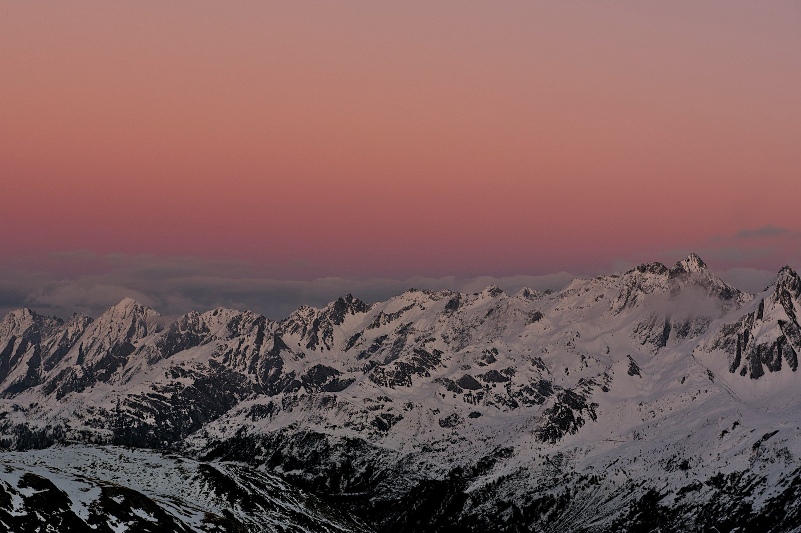
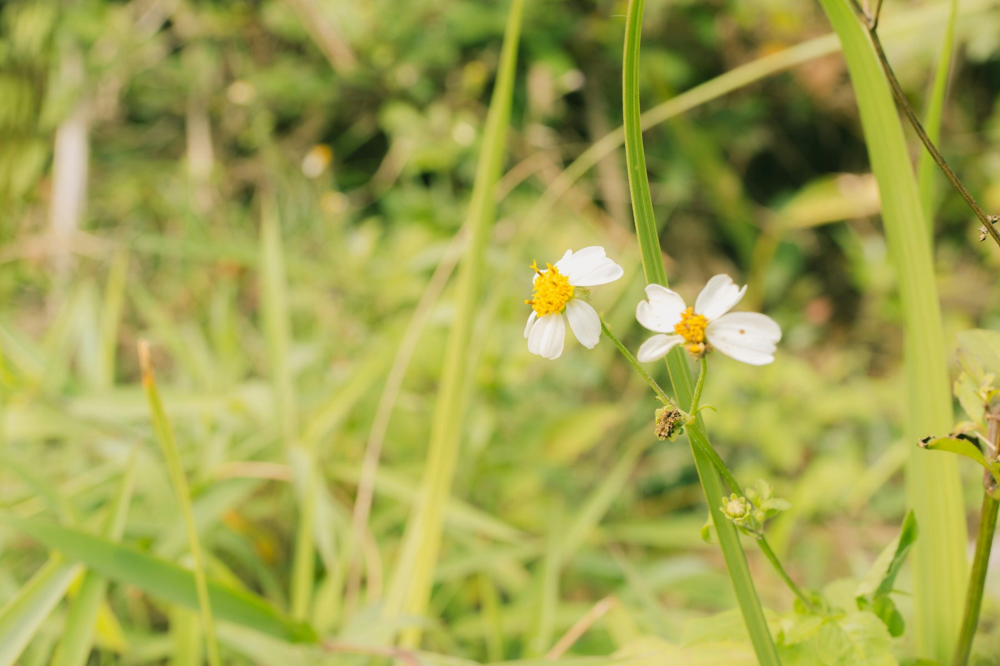
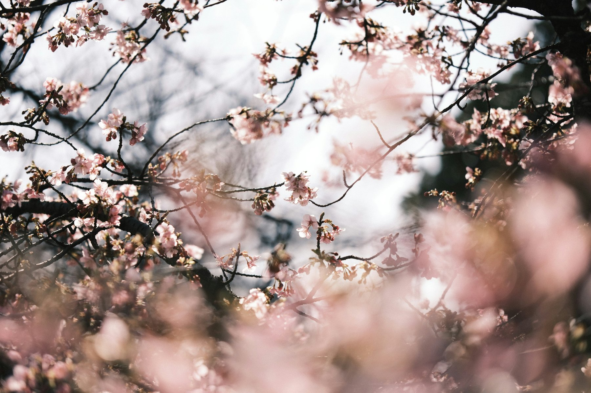
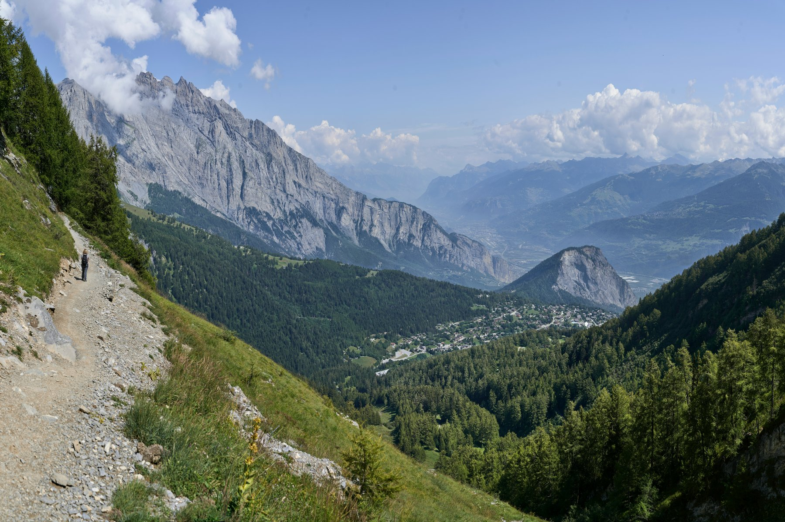

vHuman, Year Five
The only thing that’s changed is everything.




vHuman, Year Five is a redesign of the vHuman Studios website and portfolio, bringing software, interactive experiences, and 3D work into a clearer visual system. Typography, generous spacing, and restrained interaction keep the interface simple while giving each project enough room to stand on its own.
A lightweight static architecture keeps content delivery simple and maintenance straightforward, while richer features are introduced where they make the work more useful or interesting to explore. Interactive galleries, motion, and real-time 3D add depth without turning the surrounding interface into the focus.
Year Five reflects a focused direction for the studio, with design and engineering treated as parts of the same system. The result is a portfolio that stays simple to navigate while still supporting the more experimental and technically demanding work behind it.
Reality Check
Spatial, computed.
Reality Check is a performance diagnostic tool for 3D assets built for augmented reality and spatial computing. It examines USDZ models across geometry, materials, textures, object count, and file size to identify where complexity is concentrated and where performance bottlenecks may appear.
File size alone does not explain how a model will perform. Reality Check extracts measurable features from each asset and uses Python and scikit-learn to analyze their relationship with observed performance. Looking at these characteristics together creates a more complete picture of the demands a model may place on an interactive environment.
The analysis gives designers and developers a clearer starting point for optimization before an asset reaches the final experience. By showing where performance pressure is most likely to come from, Reality Check helps focus attention on the parts of a model that are most likely to need adjustment.
Kobachi
A little space for everything.
Kobachi is a modular personal dashboard for bringing projects, links, media, personal information, and everyday tools into one place. Its card-based layout gives different kinds of content their own space while keeping the overall dashboard easy to scan and organize.
Each card can take on a different role depending on the content it holds. A project, photograph, link collection, or interactive tool can use a layout suited to its purpose without breaking the structure of the page. The system stays consistent without forcing everything into the same format.
Content and layout are kept separate so the dashboard can grow without redesigning the page for every addition. Kobachi combines enough structure to keep information clear with enough flexibility to make each space feel personal.
Studio Kit 26
Made to measure.
Studio Kit 26 is the latest version of vHuman Studios’ in-house toolset, designed around the recurring needs of daily production work. It introduces Atlas, Spare Time Dynamics, Flow, and Spatial Capture, along with updates across the existing lineup.
Atlas turns any place on Earth into an explorable 3D environment. Terrain, roads, buildings, parks, and water come directly from mapped sources, so every environment begins with the actual structure of a place instead of a procedural approximation.
In supported regions, Atlas can also take a city through time. Historical records anchor what was built and when, while employment patterns, planned projects, and infrastructure drive a demand-based model of how the city could grow over the decades ahead. Past and future live in the same environment, so a city can be explored across time as easily as across space.
Spare Time Dynamics turns complex 3D source assets into clean, editable models. Each one arrives organized the way it was built, with its parts in place and working, instead of flattened into a single mesh. Exports that took hours of manual cleanup are ready in minutes, and the pipeline adapts to each asset’s structure instead of forcing everything through one generic import path. The finished model keeps all the detail of the original while becoming far easier to customize, animate, and reuse.
Flow is the gallery system behind every gallery on this site, built for presenting large image collections without making the gallery itself the focus. Images sit on angled cards in an endless loop, so a collection of any size stays easy to move through, scan, and return to. Everything adapts to any screen, and the interface around the imagery stays minimal.
Spatial Capture brings real-time LiDAR scanning and testing into the studio’s spatial workflow. Depth data appears as it’s collected, making it practical to evaluate real-world geometry on the spot and prototype interactive 3D experiences against it.
Every existing plugin, add-on, and utility moves forward with new features and support for current software. The work gets more ambitious every year, and each release sharpens the tools behind it, so complex work stays fast to develop, test, organize, and present.
Iris
Look. That’s enough.
Iris is a digital reader built on eye-tracking technology developed at Brown University. Using only a standard laptop webcam, it turns eye movement into an input method for opening books, navigating pages, and controlling the reading experience without a mouse or touchscreen.
Accurately tracking the eyes is only one part of making that interaction useful. Iris combines calibration, smoothing, dwell timing, visual feedback, and interface design to determine when looking should become an action and when it should simply remain part of reading. The result is a more controlled and intuitive layer between the tracking technology and the person using it.
Iris takes eye-tracking research and gives it a focused everyday use. Eye control can offer another way to interact when hands are occupied, speaking is inconvenient, or conventional controls are difficult to use. By placing the technology inside something as familiar as reading, Iris explores how an ordinary webcam can become an alternative input device.
Wind Tunnel
Light, speed.
Six machines, one pipeline. From 2022 to 2024, vHuman Studios took high-detail 3D source models, a race car and five aircraft, and rebuilt them to run in real time across rendering, AR, VR, and interactive software without losing what made them worth looking at. The idea never changed. A 3D asset isn’t something to look at. It has to perform.
Rocky (2022)
The first vHuman project: a detailed recreation of the Red Bull RB18, rebuilt so a render-grade asset could run in real time. Geometry, materials, and scene structure were reworked, with rendered studies produced along the way.
Lightning II (2022)
Rocky was an experiment. The Lightning II made it a workflow. Starting from a high-detail F-35 model for a government security client, the asset was rebuilt for real-time use, one version that holds up everywhere instead of a separate build for every destination. The character of the original stayed intact, alongside a series of rendered studies in lighting and composition.
Tomcat (2023)
Variable-sweep wings, layered components, moving surfaces. The Tomcat was the first articulated model through the pipeline, and it forced better answers on how a mechanical asset should be organized, animated, and kept light.
Raptor (2023)
The Raptor was about efficiency without visible loss. Materials and textures were consolidated, draw-heavy complexity cut, and a proper level-of-detail workflow built so one asset scales from phone to headset.
Spirit (2023)
A flying wing is one continuous surface, and every flaw shows. The Spirit demanded cleaner topology and physically consistent materials, and introduced automated audits for geometry and asset weight before export. Optimization stopped being manual and started being a pipeline.
Raider (2024)
Everything the program taught, applied once, properly. By the Raider, optimization was no longer about trimming weight by hand. It was a disciplined process covering geometry, materials, hierarchy, export, and real-time performance. The program ended with its cleanest, lightest, most portable asset, with nothing visibly missing.
Sesame
No magic words required.
Sesame is a redesign of a user management application built for a large enterprise environment, covering registration, sign-in, password changes, and protected access. These everyday interactions form a small but essential part of a much larger system.
The interface is intentionally restrained. Familiar patterns, clear hierarchy, and predictable behavior keep routine tasks easy to understand as the surrounding system grows more complex.
Built with Java and Jakarta EE, Sesame prioritizes maintainability and straightforward operation. The goal was to make account management clearer and easier to use, with each design decision serving that purpose.
Scarecrow AI
Finally, a brain.
Scarecrow AI explores how image recognition can help with the repetitive work of identifying and labeling corn imagery. The model suggests a classification, while people review the results and correct what it gets wrong.
We chose an active-learning approach so those corrections could inform future training. Instead of treating a prediction as the final answer, the project makes review part of the process.
Built with TensorFlow and an active-learning workflow, Scarecrow AI explores how computer vision can reduce repetitive work while keeping human judgment part of the process.
Pit Wall
Race the data.
Pit Wall is a motorsport strategy simulator built around real drivers and their past race data. Driver performance, fuel use, tire wear, and pit decisions come together in a changing race model, where a decision made on one lap can shape what happens several laps later.
Originally built to simulate NASCAR races, the system was later adapted for Formula 1 and other racing formats. Configurable race rules and reusable driver and vehicle profiles let the simulation accommodate different series, using historical performance as the starting point.
A live dashboard follows the race as it unfolds. Its subtle wraparound perspective angles information toward the viewer, giving the interface the feeling of a curved, spatial display.
Python handles the race logic and changing conditions, while a REST API keeps the simulation and dashboard synchronized. Docker provides a consistent environment for testing and deployment. The focus is on what happens behind the driving: reading the conditions, weighing a pit stop, and finding an advantage in the data.
- Lockheed Martin
- NASA
- NASA Jet Propulsion Laboratory
- United States Secret Service
- Red Bull Racing
- Formula 1
- NASCAR
- Pixar
- Frostbite
- Brown University
- Angular
- TensorFlow
- Broadcom
- VoidZero
- Autodesk
- Blender Foundation
- Docker
- Eclipse Foundation
- jsDelivr
- OpenStreetMap Foundation
- Khronos Group